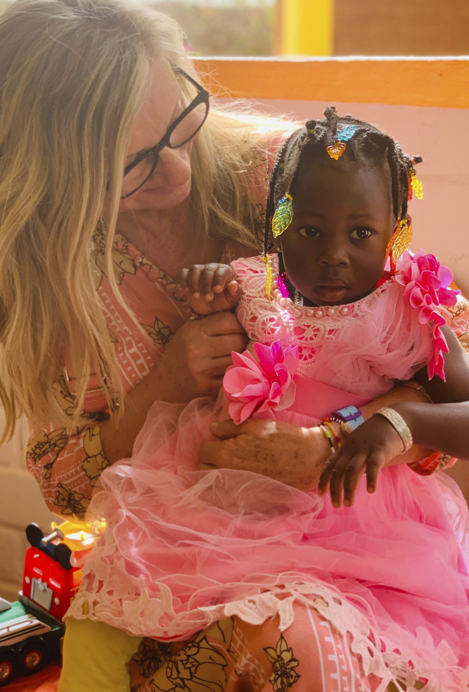

L'HISTOIRE DE BEA
Une Suissesse au cœur du Burkina
En novembre 2008, Bea Petri, mandatée par Swisscontact, arrive à Ouagadougou pour une mission d'un mois. Elle découvre l'atelier de Safi Ouattara Diallo, fondé en 2001, et comprend immédiatement le potentiel de cette école de couture.
Fascinée par la détermination de Safi et par le talent des jeunes, elle décide de s'engager pleinement au-delà de sa mission initiale. Elle loue et rénove un local voisin, forme les premières promotions en esthétique et coiffure, puis crée le Förderverein NAS MODE — une association caritative en Suisse — pour mobiliser des donateurs et financer durablement l'école.
Aujourd'hui, plus de 3,5 milliards de francs CFA ont été investis grâce à son engagement : bourses d'études, microcrédits pour femmes entrepreneures, infrastructures modernes, équipements professionnels et un jardin biologique pour la cantine.

EN IMAGES
Bea Petri au service des communautés
Bea Petri et la formation professionnelle au Burkina Faso
25 ans de NAS MODE — Témoignages et créations
NOS PARTENAIRES
Des mécènes au service de l'excellence
Swisscontact
Organisme suisse de développement. A mandaté Bea Petri en 2008 pour former les premières promotions en esthétique et maquillage cinéma.
Förderverein NAS MODE (Suisse)
Association caritative enregistrée à Schaffhausen (art. 60 CC suisse). Créée après l'arrivée de Bea Petri en 2008, elle finance les bourses, l'infrastructure et l'entretien du centre. Dons exonérés d'impôts.
Monika Burkhart & Thomas Ferreux
Soutiens fidèles venus d'Allemagne. Présents depuis les débuts, ils accompagnent le développement du centre et organisent des soirées Africa en Suisse.
État du Burkina Faso
Reconnu comme « monument identitaire », NAS MODe a reçu la distinction du ministère pour l'excellence de sa formation et la qualité de ses infrastructures.
Donateurs individuels
Chaque don finance directement une année de formation (CHF 500/an) ou un programme complet de 3 ans (CHF 1'500). Transparence totale.
FESPACO & Partenaires culturels
NAS MODE collabore avec le plus grand festival de cinéma africain pour les formations en maquillage cinéma et effets spéciaux.
Votre soutien change des destins
Avec CHF 500, vous financez une année de formation. Avec CHF 1'500, un programme complet de 3 ans. Chaque don va directement au projet, sans intermédiaire.